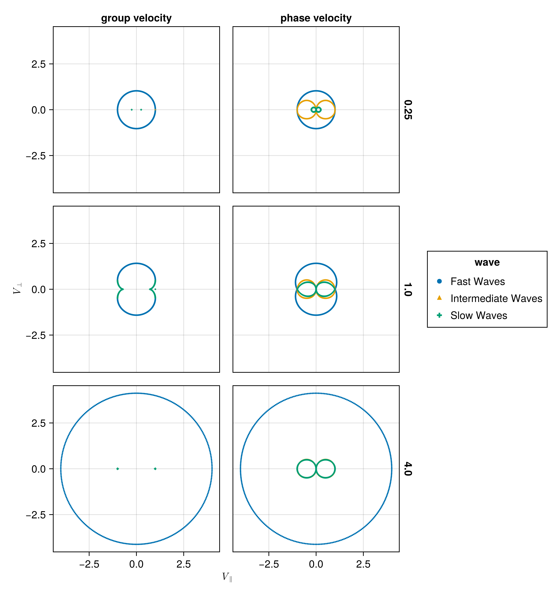

Homework 04
Group velocities for the Intermediate, Fast, and Slow wave
Derive analytically the group velocities for the Intermediate, Fast, and Slow wave.
The dispersion relation of fast and slow magnetosonic waves is \[ \omega^2=\frac{k^2}{2}\left[c_m^2 \pm \sqrt{c_m^4-4 c_s^2 c_a^2 k_z^2 / k^2}\right] = \frac{k^2}{2}\left[c_m^2 \pm c_n^2\right] \tag{1}\]
where “+” corresponds to fast mode and “-” corresponds to slow mode. And we have defined
\[ c_n^2=\sqrt{c_m^4-4 c_s^2 c_a^2 \cos ^2 \theta} \]
Thus the phase velocities of the two modes are
\[ V_{p,(f,s)}=\frac{1}{\sqrt{2}}\left[c_m^2 \pm c_n^2\right]^{1 / 2} \hat{e}_k \]
Taking derivatives with respect to \(k_x\) and \(k_z\) for Equation 1, we have
\[ \begin{aligned} 2 ω ∂_{k_x} ω = k_x (c_m^2 ± c_n^2) ± 1/2 k^2 ∂_{k_x} c_n^2 \\ 2 ω ∂_{k_z} ω = k_z (c_m^2 ± c_n^2) ± 1/2 k^2 ∂_{k_z} c_n^2 \end{aligned} \]
Because \(k^2 = k_x^2 + k_z^2\), we have
\[ \begin{aligned} ∂_{k_x} c_n^2 &= \frac{4 c_a^2 c_s^2 k_z^2 k_x}{k^4 \sqrt{c_m^4 - 4 c_s^2 c_a^2 k_z^2 / k^2}} \\ ∂_{k_z} c_n^2 &= - \frac{4 c_a^2 c_s^2 k_z k_x^2}{k^3 c_n^2} = - \frac{4 c_a^2 c_s^2 \sin θ \cos θ^2}{c_n^2} \end{aligned} \]
\[ \begin{aligned} ω ∂_{k_x} ω &= \frac{k_x}{2} (c_m^2 ± c_n^2) ± 1/4 k^2 ∂_{k_x} c_n^2 \\ &= \frac{k_x}{2} (c_m^2 ± c_n^2) ± 1/4 \frac{4 c_a^2 c_s^2 k_z^2 k_x}{k^2 \sqrt{c_m^4 - 4 c_s^2 c_a^2 k_z^2 / k^2}} \\ &= k \sin θ V_p^2 ± \frac{c_a^2 c_s^2 \cos^2 θ \sin θ k }{c_n^2} \\ ω ∂_{k_z} ω &= \frac{k_z}{2} (c_m^2 ± c_n^2) ± 1/4 k^2 ∂_{k_z} c_n^2 \\ &= k \cos θ V_p^2 \mp \frac{c_a^2 c_s^2 \sin θ^2 \cos θ k}{c_n^2} \end{aligned} \]
So
\[ \begin{aligned} V_{g,x} = ∂_{k_x} ω = V_p \sin θ (1 ± \frac{c_a^2 c_s^2 \cos^2 θ}{V_{p}^2 c_n^2}) \\ V_{g,z} = ∂_{k_z} ω = V_p \cos θ (1 ∓ \frac{c_a^2 c_s^2 \sin^2 θ}{V_{p}^2 c_n^2}) \end{aligned} \]
Phase velocity and the group velocity polar plots
Plot the phase velocity and the group velocity polar plots for \(C_S= 0.25 C_A\) and \(C_S= 4 C_A\).
Here we plot velocity type (group or phase) for different wave types (fast, slow, intermediate) for different ratios of \(C_S/C_A\).
::: 
Velocity comparison of different wave types for different ratios of \(C_S/C_A\) and velocity types. :::
:::
Velocity comparison of group and phase velocities for different wave types abd ratios :::
"""
Calculates the phase velocities and group velocities for fast and slow waves.
"""
function calc_VpVg_fastandslow(cs, ca, θ)
cm = sqrt(cs^2 + ca^2) #: magnetosonic speed
cm2 = cs^2 + ca^2
cn2 = @. sqrt(cm^4 - 4 * cs^2 * ca^2 * cos(θ)^2)
Vpi = @. ca * abs(cos(θ))
Vps = sqrt.(0.5 * (cm2 .- cn2))
Vpf = sqrt.(0.5 * (cm2 .+ cn2))
Vpi_para = @. Vpi * cos(θ)
Vpi_perp = @. Vpi * sin(θ)
Vps_para = @. Vps * cos(θ)
Vps_perp = @. Vps * sin(θ)
Vpf_para = @. Vpf * cos(θ)
Vpf_perp = @. Vpf * sin(θ)
Vgs_perp = @. Vps * sin(θ) * (1 - cs^2 * ca^2 / Vps^2 / cn2 * cos(θ)^2)
Vgs_para = @. Vps * cos(θ) * (1 + cs^2 * ca^2 / Vps^2 / cn2 * sin(θ)^2)
Vgf_perp = @. Vpf * sin(θ) * (1 + cs^2 * ca^2 / Vpf^2 / cn2 * cos(θ)^2)
Vgf_para = @. Vpf * cos(θ) * (1 - cs^2 * ca^2 / Vpf^2 / cn2 * sin(θ)^2)
intermediate_wave_p = (
wave = "Intermediate Waves",
type= "phase velocity",
v_parp = Vpi_para,
v_perp = Vpi_perp
)
intermediate_wave_g = (
wave = "Intermediate Waves",
type= "group velocity",
v_parp = ca,
v_perp = 0
)
fast_wave_p = (
wave = "Fast Waves",
type= "phase velocity",
v_parp = Vpf_para,
v_perp = Vpf_perp
)
fast_wave_g = (
wave = "Fast Waves",
type= "group velocity",
v_parp = Vgf_para,
v_perp = Vgf_perp
)
slow_wave_p = (
wave = "Slow Waves",
type= "phase velocity",
v_parp = Vps_para,
v_perp = Vps_perp
)
slow_wave_g = (
wave = "Slow Waves",
type= "group velocity",
v_parp = Vgs_para,
v_perp = Vgs_perp
)
return (
fast_wave_g, fast_wave_p,
slow_wave_g, slow_wave_p,
intermediate_wave_p, intermediate_wave_g
)
endMaximum excursion of the group velocity
"""
Calculates the group velocities for slow waves.
"""
function vgs(θ, cs, ca)
cm = sqrt(cs^2 + ca^2) #: magnetosonic speed
cm2 = cs^2 + ca^2
cn2 = sqrt(cm^4 - 4 * cs^2 * ca^2 * cos(θ)^2)
Vps = sqrt(0.5 * (cm2 - cn2))
Vgs_para = Vps * cos(θ) * (1 + cs^2 * ca^2 / Vps^2 / cn2 * sin(θ)^2)
Vgs_perp = Vps * sin(θ) * (1 - cs^2 * ca^2 / Vps^2 / cn2 * cos(θ)^2)
return Vgs_para, Vgs_perp
end
"""
Calculates the group velocities propagation angle for slow waves.
"""
function vgs_angle(θ, cs, ca)
Vgs_para, Vgs_perp = vgs(θ, cs, ca)
return atan(Vgs_perp, Vgs_para)
end
function maximum_vgs_angle(cs, ca)
f(θ) = -abs(vgs_angle(θ, cs, ca))
res = optimize(f, 0, π/2)
return res.minimizer
endfunction plot_maximum_vgs_angle(cs)
df = VpVg_fastandslow_df(cs)
θmax = maximum_vgs_angle(cs, ca)
@show θmax
Vgs_para, Vgs_perp = vgs(θmax, cs, ca)
subset!(df, :type => ByRow(==("group velocity")))
base_map = data(df) * mapping(
:v_parp => L"V_{\parallel}",
:v_perp => L"V_{\perp}",
) * visual(Scatter, markersize=3);
plt = base_map * mapping(color=:wave, col=:cs => nonnumeric)
fig = draw(plt, axis=axis)
lines!(
[0, Vgs_para], [0, Vgs_perp],
color=:black,
linestyle=:dash,
)
return fig
endFor \(C_S = 0.8 C_A\), the maximum excursion of the group velocity is at \(\theta = 0.262\), the group velocity is propagating at an angle of \(\phi = - 0.228\).
For \(C_S = 1.25 C_A\), the maximum excursion of the group velocity is at \(\theta = 0.262\), the group velocity is propagating at an angle of \(\phi = - 0.228\).
Similary for \(C_S = 0.25 C_A\) and \(C_S = 4 C_A\), we have \(\theta = 0.500, \phi = - 0.020\).
Comparison of the group velocity
Use the 2D solver to demonstrate that the F, S, and I waves propagate with the predicted group velocity. To do this, plot the F and S waves from a thermal pressure bomb at a given time t for which the disturbances (F and S) have propagated a distance Vg,F/S * t, and overplot the analytical group velocity-times-t diagram for that choice of CS/CA. They should lie on top of each other. Do the same for the I (Alfvén) waves generated by a magnetic pressure bomb with component in the out-of-plane direction (it will result in an Alfvén wave pulse).
The group velocity for the fast and slow waves are overplotted with scattered points with blue and orange colors respectively. Generally, the analytical group velocity is consistent with the numerical group velocity. We do not have the intermediate wave for the thermal pressure bomb but we have the intermediate wave for the magnetic pressure bomb as shown in the \(B_z\) plot.